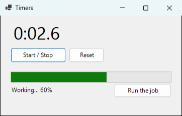

Tutorial 34: Timers and progress
A window must never freeze. This lesson builds a stopwatch and a progress bar, and shows how to do a long job in small steps so that the window keeps responding.
What you will learn#
- the Windows Forms
Timerand why it is safe, - measuring time with
Stopwatch, - the progress bar,
- why a long job freezes a window, and the fix: work in small steps,
- how to test code that depends on time.
The message loop and freezing#
A window program lives in a message loop: it waits for something to happen (a click, a key, a repaint), runs your code, and returns to waiting. While your code runs, nothing else happens: the window is not repainted, buttons do not react. A job that takes five seconds, run in one go, freezes the window for five seconds, and Windows may mark it "not responding".
In languages with threads the usual answer is "do the work on another thread". Ring code runs on one thread, so the answer here is different: cut the job into small parts and do one part each time a timer ticks. Between the parts the message loop runs, the window repaints, the user can click Cancel.
The program#
# Tutorial 34: timers and progress - a stopwatch and a long job that keeps the window alive
load "dotnetlib.ring"
dnUseDesktop()
using {
"System"
"System.Diagnostics"
"System.Threading"
"System.Drawing"
"System.Windows.Forms"
}
oForm = ""
oTime = ""
oBar = ""
oInfo = ""
oClock = "" # the timer that updates the time every 50 ms
oJob = "" # the timer that does one small part of the job every 20 ms
oWatch = "" # a Stopwatch object
nDone = 0 # how many parts of the job are done
nTotal = 100
lRunning = False
func main
oWatch = new Stopwatch()
oForm = uiForm("Timers",360,200)
oTime = uiLabel(oForm,"0:00.0",20,10,320,44)
oTime.Font = new Font("Segoe UI",26)
uiButton(oForm,"Start / Stop",20,64,110,30,"toggleWatch()")
uiButton(oForm,"Reset",136,64,70,30,"resetWatch()")
oBar = new ProgressBar() {
Location = new Point(20,112)
Size = new Size(320,22)
Minimum = 0
Maximum = 100
}
oForm.Controls.Add(oBar)
oInfo = uiLabel(oForm,"The job has not started",20,140,200,22)
uiButton(oForm,"Run the job",226,136,114,28,"startJob()")
# TIMER 1: shows the stopwatch time. A Windows Forms timer ticks on the Ring thread: it can use Ring code and controls.
oClock = uiTimer(50,"showTime()")
oClock.Start()
uiTest(oForm,"selfTest()")
uiRun(oForm)
uiEnd()
# ---------------------------------------------------------------- the stopwatch
func toggleWatch
if oWatch.IsRunning
oWatch.Stop()
else
oWatch.Start()
ok
func resetWatch
oWatch.Reset()
showTime()
func showTime
nMilliseconds = oWatch.ElapsedMilliseconds
nSeconds = floor(nMilliseconds / 1000)
oTime.Text = "" + floor(nSeconds / 60) + ":" + right("0" + (nSeconds % 60),2) + "." + floor((nMilliseconds % 1000) / 100)
# ---------------------------------------------------------------- a long job in small parts
# A job that takes seconds must NOT run in one go: the window would freeze (no repainting, no clicks).
# Instead, do a small part each time a timer ticks, and return to the message loop in between.
func startJob
if lRunning
return
ok
lRunning = True
nDone = 0
oBar.Value = 0
oJob = uiTimer(20,"jobStep()")
oJob.Start()
oInfo.Text = "Working..."
func jobStep
nDone += 5 # one small part of the work
oBar.Value = min(nDone,nTotal)
oInfo.Text = "Working... " + nDone + "%"
if nDone >= nTotal
oJob.Stop()
lRunning = False
oInfo.Text = "Finished"
ok
# ---------------------------------------------------------------- the test: stop the timers, call the steps by hand
func selfTest
oClock.Stop()
toggleWatch() # start
new Thread().Sleep(150)
toggleWatch() # stop
showTime()
dnAssert("the stopwatch measured time",oWatch.ElapsedMilliseconds >= 100,True)
resetWatch()
dnAssert("reset",oTime.Text,"0:00.0")
startJob()
for nStep = 1 to 20
jobStep()
next
dnAssert("the job finished",oInfo.Text,"Finished")
dnAssert("the bar is full",oBar.Value,100)
SELFTEST OK (4 checks)How it works#
The timer#
uiTimer(50,"showTime()") creates a Windows Forms Timer that calls showTime() every 50 milliseconds once it is started. This timer raises its Tick event on the Ring thread, inside the message loop, so the code can use Ring variables and controls freely. (The System.Threading.Timer of .NET ticks on another thread: Ring code cannot run there.)
The stopwatch#
A Stopwatch measures time exactly: Start(), Stop(), Reset(), IsRunning and ElapsedMilliseconds. The function showTime splits the milliseconds into minutes, seconds and tenths and writes them into the label. The timer only displays the time; the stopwatch keeps it, which is why the display is right even if a tick is late.
The long job#
startJob creates a second timer, every 20 ms; jobStep does one small part (5 percent), updates the ProgressBar and the text, and stops the timer at 100. The whole job takes about 400 ms, and the stopwatch keeps running and the buttons keep working while it runs: press Start / Stop during the job to see it.
How big should a part be? Small enough that one step takes well under 50 ms, so the window stays smooth.
ProgressBar#
Minimum, Maximum and Value. For a job of unknown length use Style = "Marquee", which shows a moving bar.
Testing time#
A test cannot wait for ticks. selfTest stops the clock timer, calls toggleWatch, sleeps 150 ms with Thread.Sleep, stops the watch and checks that at least 100 ms were measured. It calls jobStep() twenty times by hand and checks that the bar is full. Design for this: put the real work in functions that a timer calls, so a test can call them directly.
What you learned#
- never run a long job in one go inside an event,
- a timer calls a small step again and again,
Stopwatchmeasures,Timerdisplays,- put the work in functions so tests can call them.
Exercises#
- Add a Cancel button that stops the job.
- Make the step size depend on how long the last step took.
- Add a countdown: a text box with seconds, a Start button, and a message when it reaches zero.
- Show the estimated time remaining next to the progress bar.